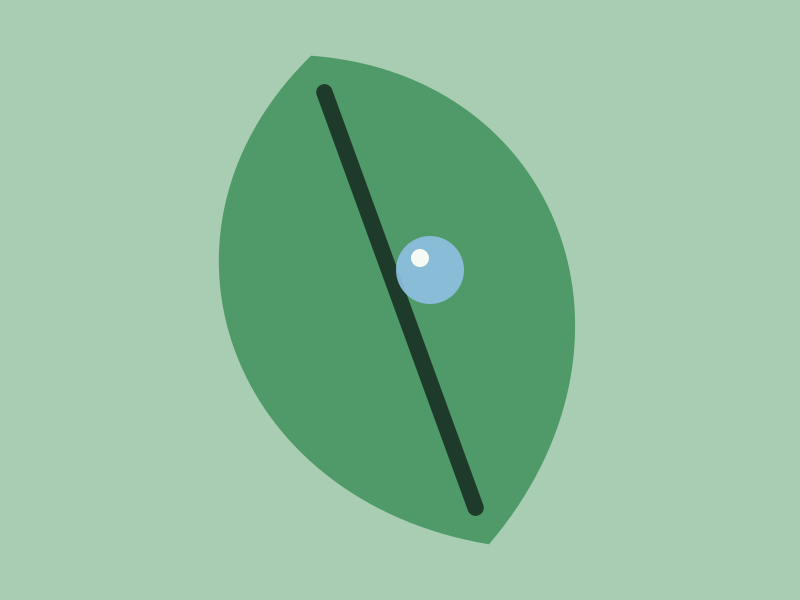
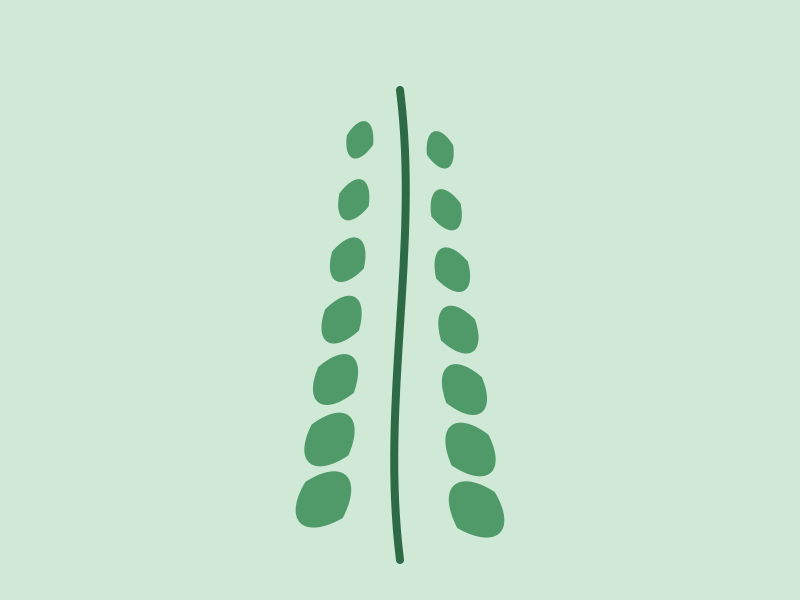
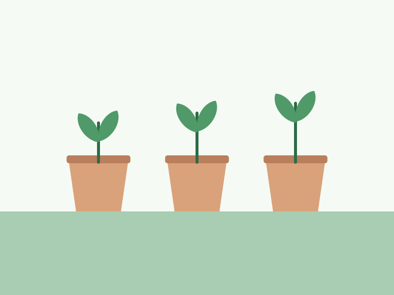
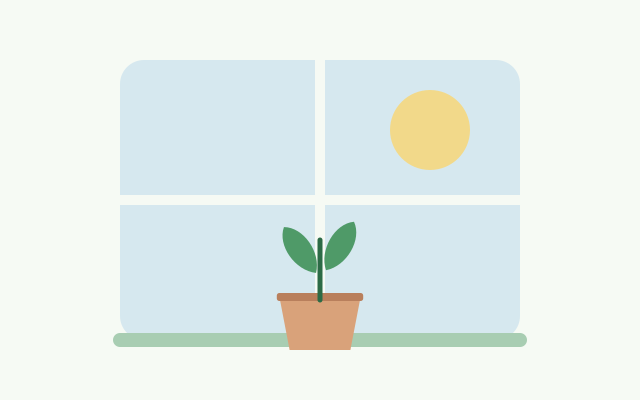
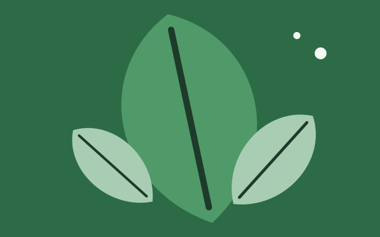
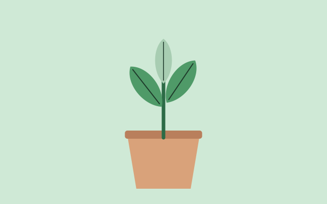
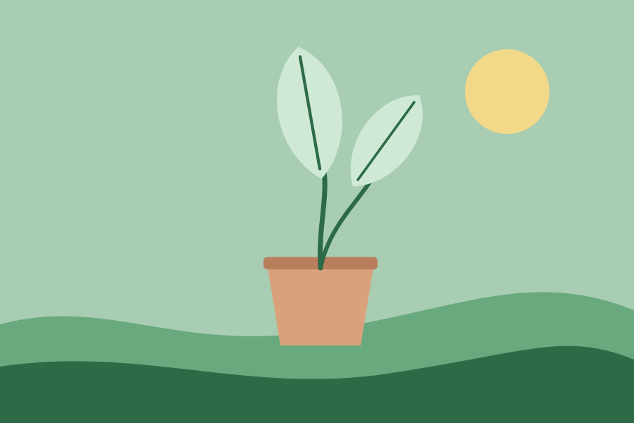

Monday
Monstera, water until it runs
Done, 7:40 in the morning. Two litres, saucer emptied after ten minutes.
Watered
Wednesday · two things to do
Twelve plants on three sills. Windowsill keeps the watering days so you only have to keep the plants. Today it is the fern and a check on the pothos; everything else can wait.

One stem, top to bottom. The green node is what is due now; the pale ones are behind you.

Monday
Done, 7:40 in the morning. Two litres, saucer emptied after ten minutes.

Today
The fern wants damp air more than wet soil. Mist the fronds, then fill the pebble tray to just under the pebbles.
Today
A finger in the soil. Dry to the first knuckle means water on Saturday as planned; damp means push it to Sunday.

Saturday
All three on the kitchen sill. Water in the sink, let them drain, put them back a quarter turn round.
The ones that need you soonest come first.



Living room, east
Watered Monday. Next in nine days, sooner if the top two inches dry.

A new plant
Name the plant, say which window it sits in and how big the pot is. Windowsill starts it on a sensible interval and shortens or stretches it as you log what you actually did.
Nothing dramatic. The task stays at the top of the stem until you log it, and the next date moves from the day you actually watered, not the day you were meant to.
It starts from the plant's type, the pot size and the window, then learns from what you log. Water early twice and the interval shortens; skip a scheduled day and it stretches. You can set the interval by hand on the plant's page.
Yes, and it slows everything down. From November to February most intervals stretch by a third, because the plants are barely growing and wet soil in a cold room is how roots rot.